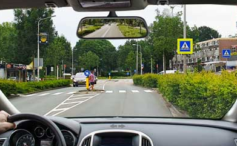

Gevaarherkenning
Sinds 7 april 2025 is het onderdeel gevaarherkenning geen vast onderdeel meer van het autotheorie-examen.
👉 Je kunt er wel nog mee oefenen om je verkeersinzicht te verbeteren.
Hoe werkte dit onderdeel?
- Je kreeg 25 vragen met een verkeerssituatie.
- Elke vraag liet een foto zien vanuit een auto.
- Je zag: de snelheid, de achteruitkijkspiegel en de richtingaanwijzers.

Gevaarherkenning